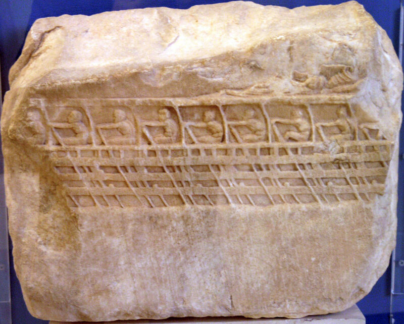
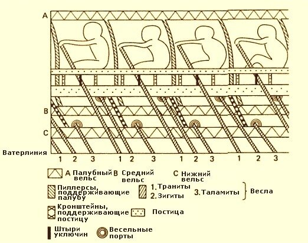

…- Что вы там нашли такого, на что другие не обратили внимания?
- Весло, - сказал Стивенс
- Весло?
У.Фолкнер. «Весло» (Перевод Н. Колпакова)

Значительное количество информации о веслах античных кораблей можно почерпнуть из военно-морских реестров, фрагменты которых были обнаружены среди надписей, найденных при раскопках в Пирее. Из них можно, в частности, узнать, что на триреме было 30 запасных весел, причем весла эти были двух размеров: 9 и 9 ½ локтей (cubits). Другие отрывки свидетельствуют, что все весла простирались на одинаковое расстояние от бортов триремы, хотя они и не были одной и той же длины. Вот как об этом пишет классик античной медицины, римский врач и естествоиспытатель Клавдий Гален (II век). Приведу обширный отрывок из его труда «О назначении частей тела»(I.24):
«Почему пальцы неодинаковы? Почему средний длиннее остальных? Или это потому, что было более целесообразным, чтобы их концы оказались все на одной линии при охвате какого-либо объемистого предмета или когда желательно удержать между пальцами мягкие или маленькие тела? Ведь независимо от того, хотят ли крепко держать большой предмет или с силой бросить его, равномерный захват его со всех сторон очень полезен. При подобных действиях все пять пальцев как бы образуют окружность круга, особенно когда они охватывают предмет совершенно округлый. В самом деле, в этом случае получается вполне ясное представление о том, что происходит и при других телах, но с меньшей очевидностью, а именно что концы пальцев, находясь друг против друга и со всех сторон на одной линии, делают захват более крепким и бросание — более сильным. Я думаю, что то же явление имеет место на триремах, у которых концы весел приходятся на одной линии, хотя в действительности весла неодинаковой длины. С той же целью средние весла сделаны наиболее длинными.»
Кроме 30 запасных весел, о которых мы уже говорили, на борту классической афинской триеры имелось еще 170 весел, которые были разделены на три класса, соответственно классам гребцов. Как известно, каждый из трех ярусов весел на триере обслуживался своей группой гребцов, носивших название траниты (thranitai), зигиты (zygitai) и таламиты (thalamitai); эти названия означали соответственно гребцов верхнего, среднего и нижнего рядов. Каждый гребец работал одним веслом в положении сидя. Почти все античные реестры дают следующее распределение между упомянутыми выше классами: 62, 54 и 54 весла соответственно.
Лопасти весел, для экономии древесины, делались , вероятно, плоскими, а не ложкообразными. Рукоятка не конце весла имела диаметр 5 см, чем обеспечивался удобный охват ее кистями рук гребца, и была относительно длинной – около 40 см, чтобы можно было держать руки на ширине плеч. Сбалансированы весла были таким образом, чтобы при заносе их при подготовке к очередному гребку они удерживались над водой лишь под весом рук гребцов, чем достигалась экономия сил. К штырям уключин весла крепились в помощью петель из крепкого троса. Во времена Гомера это были кожаные петли:
Сдвинули прежде всего в глубину они моря корабль свой,
Мачту потом со снастями на черный корабль уложили,
К кожаным кольцам уключин приладили крепкие весла,
Как полагается все, и потом паруса распустили.
(В переводе Жуковского значимая строка звучит следующим образом:
«В крепкоременные петли просунули длинные весла»)
Ясное впечатление о размещении гребцов на античной триреме дает фрагмент барельефа, найденный Шарлем Ленорманом (Charles Lenormant) при раскопках храма Эрехтейон, расположенного на Акрополе к северу от Парфенона. Изображение этого барельефа приведено в начале поста. Чтобы было ясно устройство этой триремы, приведем расшифровку изображения, сделанную J.Morrison и J.Coates.

Какие выводы еще можно сделать из этого изображения, а также развитие конструкции галерного весла рассмотрим в следующий раз.